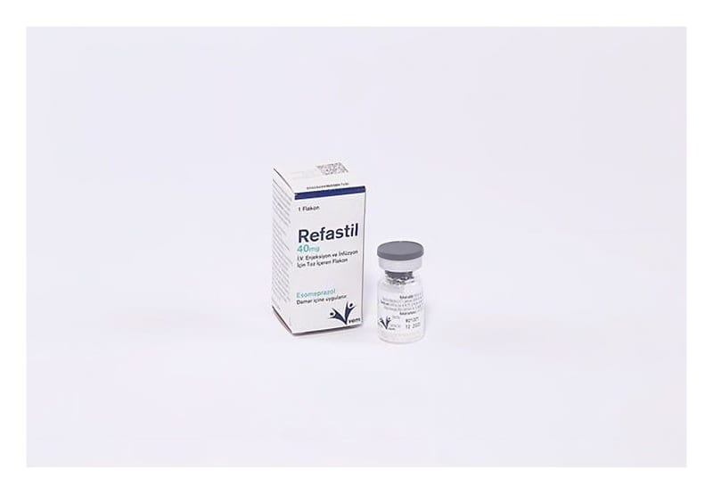

Refastil 40 mg I.V Enjeksiyon Ve İnfüzyon İçin Toz İçeren Flakon

Ne için kullanılır
KT · Bölüm 1REFASTİL, esomeprazol içermektedir ve “proton pompası inhibitörü” olarak bilinen ilaçlardan biridir. Midenizdeki asit oluşumunu azaltır. REFASTİL, 40 mg esomeprazol toz içeren 5 mL kapasiteli 1 adet renksiz cam flakonda kullanıma sunulmaktadır. REFASTİL, ağızdan tedavi alamadığınız aşağıdaki durumların kısa süreli tedavisi için kullanılır. Mide suyunun yemek borusuna kaçışına bağlı yemek borusunda iltihaplanma ve ağrı (Eroziv reflü özofajit’in tedavisinde)
Yetişkinler, adolesanlar ve çocuklarda, mide suyunun yemek borusuna kaçışına bağlı mide yanması ve kusma gibi hastalık belirtilerinde (Gastro-özofajiyal reflü hastalığının semptomatik tedavisinde) Ülserler: Yetişkinlerde ağrı ve iltihaplanma için kullanılan ilaçların neden olduğu ülserlerin iyileştirilmesi ve önlenmesinde (gastrik ülserlerin iyileştirilmesi ile NSAİİ (non- steroidal anti-inflamatuvar ilaç) tedavisine bağlı gastrik ve düodenal ülserlerin önlenmesi) Akut kanamalı gastrik veya duodenal ülserli yetişkin hastalarda terapötik endoskopi sonrası, kanamanın kısa süreli durdurulmasında ve tekrar kanamanın önlenmesinde.